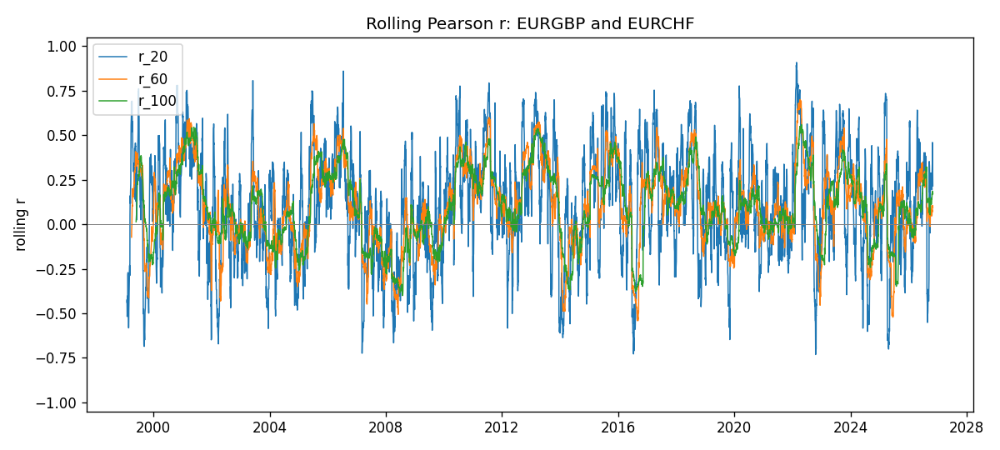
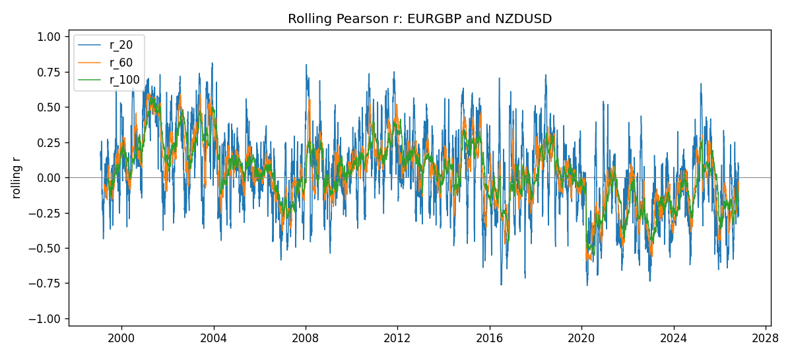
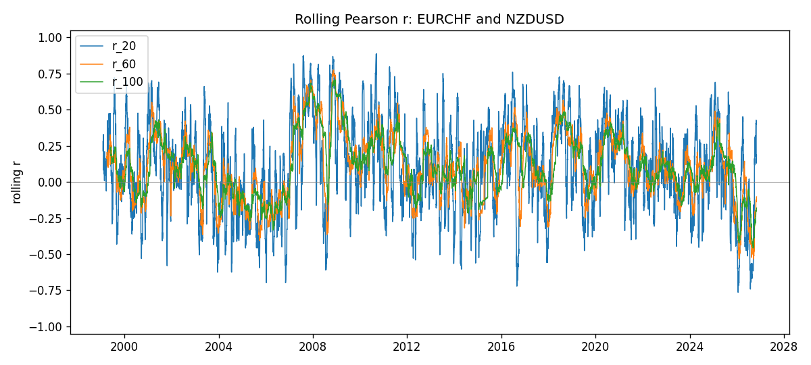

Across the full history, none of these three crosses sits in a stable high-positive or high-negative band. Full-sample Pearson r is near zero for all three (about 0.09, 0.04, and 0.14). Rolling windows 20 / 60 / 100 wander around zero, spike briefly above |0.5|, and fall back. That matches the reason this dig was opened: these names are not “always correlated” pairs; they are quiet on average and noisy in short windows.
Method 05 named dig under
05 - Rolling Correlation/eurgbp-eurchf-nzdusd/.
Not a new experiment version. Does not change rolling v001.
Not a trade signal.
Rolling correlation v001 ranked majors pairs into a short watchlist, a secondary tier, and a low-value group using full-sample Pearson r and the latest r20 / r60 / r100 scores. High |r| pairs such as AUDUSD–NZDUSD or EURUSD–USDCHF stay in strong bands for long stretches. This folder asks a different question: what do the rolling paths look like for three crosses that do not show that behaviour — EURGBP, synthetic EURCHF, and NZDUSD — when they are compared with each other.
The three charts below are the pairwise crosses among those three series: EURGBP–EURCHF, EURGBP–NZDUSD, and EURCHF–NZDUSD.
data/snapshots/2026-11-03_majors_alpari_D1
(Alpari D1, broker suffix _i).ln(closet / closet−1). Quote direction unchanged;
no inversion.EURCHF close = EURUSD close × USDCHF close (CHF per EUR).
Its log return equals the sum of the EURUSD and USDCHF log returns.run_crosses.py. Charts live under
outputs/.
n = 7165 matched days (1999-01-06 to 2026-11-02). Full-sample r ≈ 0.093. Latest: r20 ≈ 0.216, r60 ≈ 0.096, r100 ≈ 0.174. The short window flips sign often; the 60- and 100-day lines stay closer to zero and rarely push past |0.5|.

n = 7183 matched days. Full-sample r ≈ 0.037 (same pair appears in rolling v001 low-value as NZDUSD–EURGBP). Latest: r20 ≈ −0.273, r60 ≈ −0.091, r100 ≈ −0.165. Mean rolling r across history is near zero for every window.

n = 7168 matched days. Full-sample r ≈ 0.135 — the strongest of the three, still weak. Latest: r20 ≈ 0.186, r60 ≈ −0.103, r100 ≈ −0.180. Short and long windows can disagree on sign at the same date.
“Latest” is the last available rolling score on 2026-11-02. Mean / std / min / max are over all non-missing rolling scores for that window. “Share |r| > 0.5” is the fraction of those scores with absolute value above 0.5 (a rough “high” band used only for reading these paths).
| Pair | n | Full-sample r | Latest r20 | Latest r60 | Latest r100 |
|---|---|---|---|---|---|
| EURGBP–EURCHF | 7165 | 0.093 | 0.216 | 0.096 | 0.174 |
| EURGBP–NZDUSD | 7183 | 0.037 | −0.273 | −0.091 | −0.165 |
| EURCHF–NZDUSD | 7168 | 0.135 | 0.186 | −0.103 | −0.180 |
| Pair | Window | Mean r | Std | Min | Max | Share |r| > 0.5 | Share |r| > 0.7 |
|---|---|---|---|---|---|---|---|
| EURGBP–EURCHF | 20 | 0.105 | 0.307 | −0.731 | 0.909 | 13.6% | 1.8% |
| EURGBP–EURCHF | 60 | 0.102 | 0.227 | −0.541 | 0.700 | 3.4% | 0.0% |
| EURGBP–EURCHF | 100 | 0.098 | 0.203 | −0.400 | 0.560 | 1.5% | 0.0% |
| EURGBP–NZDUSD | 20 | 0.037 | 0.296 | −0.768 | 0.814 | 10.7% | 0.9% |
| EURGBP–NZDUSD | 60 | 0.030 | 0.224 | −0.592 | 0.599 | 3.5% | 0.0% |
| EURGBP–NZDUSD | 100 | 0.030 | 0.207 | −0.554 | 0.565 | 1.6% | 0.0% |
| EURCHF–NZDUSD | 20 | 0.099 | 0.312 | −0.764 | 0.887 | 14.0% | 1.9% |
| EURCHF–NZDUSD | 60 | 0.106 | 0.227 | −0.533 | 0.775 | 4.5% | 0.5% |
| EURCHF–NZDUSD | 100 | 0.110 | 0.199 | −0.458 | 0.706 | 3.4% | 0.1% |
What we got to know. EURGBP, synthetic EURCHF, and NZDUSD do not form a tight three-way dependence block on daily log returns. Every cross has a near-zero full-sample Pearson r. Over ~27 years of Alpari D1 history, rolling means stay near zero for all three windows. Short windows (20) often look “interesting” for a few weeks — absolute correlation above 0.5 on roughly one day in seven to nine — but those episodes almost never survive into the 100-day window. At the latest complete day (2026-11-02), no cross shows a strong alignment: the largest |latest| score is only about 0.27 (EURGBP–NZDUSD r20), and the longer windows are all below |0.2|.
Compared with rolling v001. The short watchlist pairs keep high |r| for long stretches. These three crosses do not. EURGBP–NZDUSD already sat in the v001 low-value / “still near zero” group; the new EURCHF crosses behave the same way. Digging into rolling paths does not uncover a hidden stable link — it shows intermittent noise around a weak average.
Practical takeaway for this research stream. Do not treat EURGBP–EURCHF, EURGBP–NZDUSD, or EURCHF–NZDUSD as structural correlation anchors. If a later method needs a quiet control pair, EURGBP–NZDUSD is a clear candidate. If attention is spent on EUR/CHF exposure, measure it against the stored majors that actually show strong rolling bands (for example EURUSD–USDCHF in v001), not against NZDUSD or EURGBP. Escalate only if a short window spike is confirmed by r60 and r100 for a sustained period — something these three charts almost never do.
Source files: NOTES.md, run_crosses.py,
outputs/*_Rolling_D1_rolling.png.
Open this page from the folder so the image paths resolve.